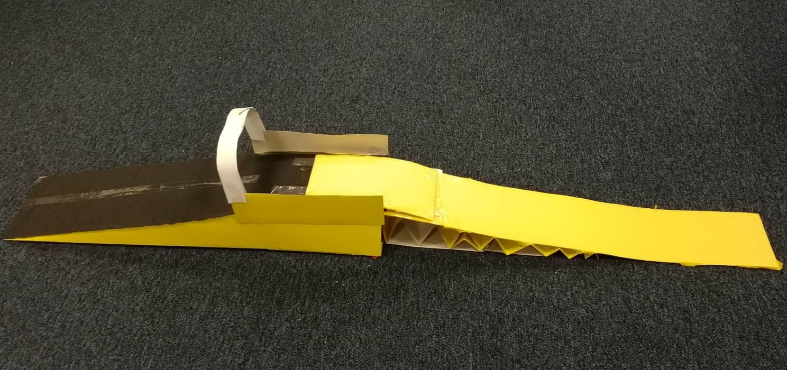

<div class="container">
  <div class="col-10">
    <h1>
      BACK-END és FRONT-END kapcsolata
    </h1>
    <h2>Mire figyeljünk oda</h2>
    <ul>
      <li>
        <a href="#exampleModal" data-toggle="modal">A kapcsolat megteremtése</a>
      </li>
      <li>
        <a href="#exampleModal2" data-toggle="modal">A megfelelő minőség biztosítása</a>
      </li>
      <li><a href="">Http kérések</a></li>
      <li><a href="">Szerver válasz kezelése</a></li>
      <li><a href="">Titkosítás</a></li>
      <li><a href="">Portok</a></li>
      <li><a href="">Ajax kommunikáció</a></li>
      <li><a href="">Angular http/ httpClient</a></li>
      <li><a href="">Request és response felépítése, tartalma</a></li>
      <li><a href="">Kérések optimalizálása</a></li>
      <li><a href="">Biztonság, autentikáció</a></li>
    </ul>
  </div>
</div>
<!-- Modal -->
<div class="modal fade" id="exampleModal" tabindex="-1" role="dialog" aria-labelledby="exampleModalLabel" aria-hidden="true">
  <div class="modal-dialog" role="document">
    <div class="modal-content">
      <div class="modal-body">
        
      </div>
    </div>
  </div>
</div>

<div class="modal fade" id="exampleModal2" tabindex="-1" role="dialog" aria-labelledby="exampleModal2Label" aria-hidden="true">
  <div class="modal-dialog text-center" role="document">
    <div class="modal-content">
      <div class="modal-body">
        
      </div>
    </div>
  </div>
</div>
